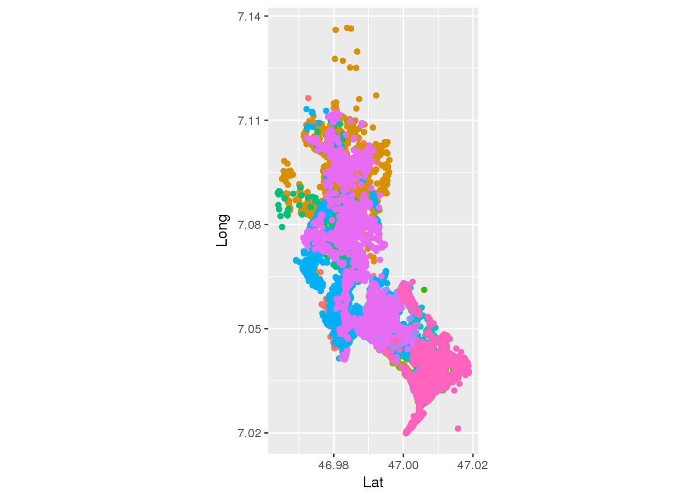
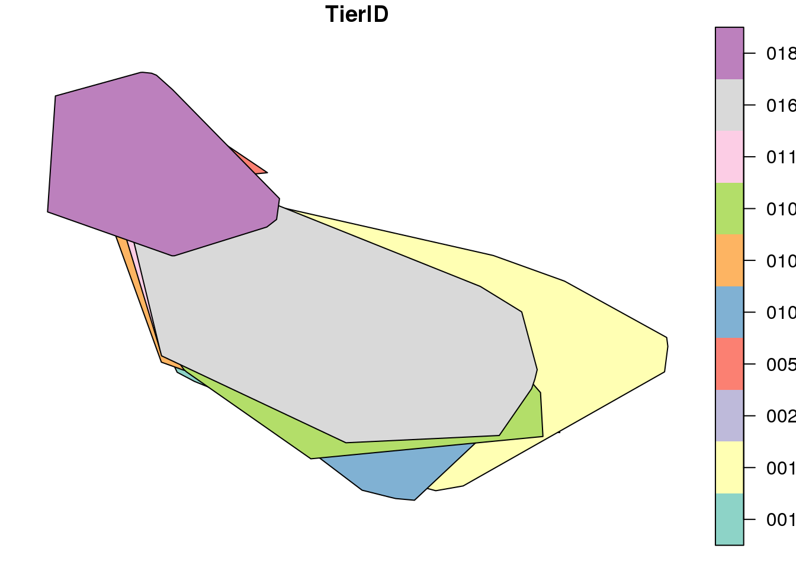
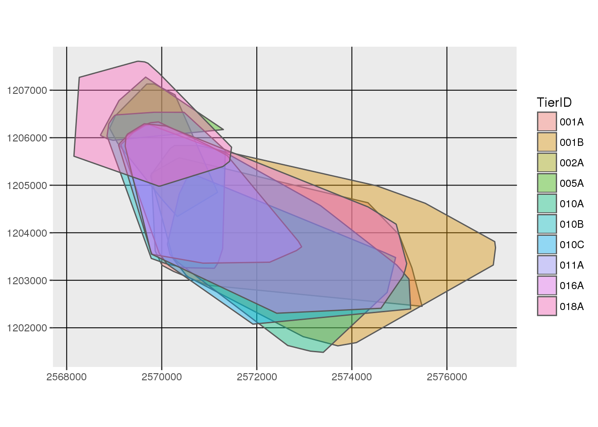
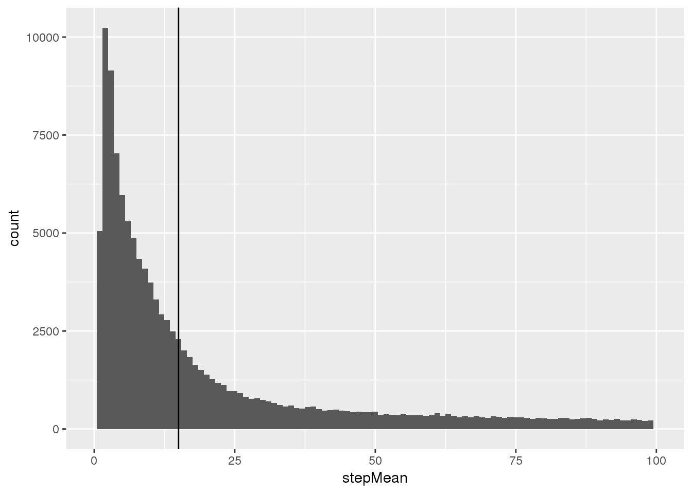

Exercise 1
Exercise 1 covers the necessary steps for getting ready in R and some basic concepts for setting up a well-structured R project. The lesson introduces how additional packages that provide useful functions for data science are made available and how spatial data is handled. The exercise concludes with the creation of your first map featuring movement data.
Leaning outcomes
- You learn how to structure an
Rproject. - You can read movement data from a .csv-file into a
data.frame - You can convert spatial point data from a
data.frameto a spatial objectsf - You can perform basic spatial operations on spatial objects in
R - You can produce simple maps of your spatial data using
ggplot2
Prerequisites
Readings Skills from “R for Data Science” (Wickham and Grolemund 2017):
- RS1.1 Preface (16p, ix-xxiv)
- RS1.2 Chap2 Workflow basics (3p, 37-39)
- RS1.3 Chap4 Workflow scripts (3p, 77-79)
- RS1.4 Chap6 workflow projects (6p, 111-116)
- RS1.5 Chap8 Data Import with
readr(21p) - RS1.6 Chap13 Date and Times with
lubridate(18p, 237-256)
Preperation
If you haven’t already, install the packages tidyverse, and devtools (using install.packages()). Use devtools to install the newest version of ggplot1 from github (see code below). Additionally, install the packages sf2, raster and ggspatial. Restart your R session after installing all these packages.
install.packages("tidyverse")
install.packages("devtools")
devtools::install_github("tidyverse/ggplot2")
# run the following line only if you are working on RStudio Server
install.packages('udunits2', type = "source", repo = "cran.rstudio.com", configure.args="--with-udunits2-include=/usr/include/udunits2")
install.packages("sf")
install.packages("raster")
install.packages("ggspatial")Tasks and inputs
Task 1: Initialize project
Create a new RStudio Project. As recommended in Wickham and Grolemund (2017), remove the option “Restore .RData into workspace at startup” and set the option “save workspace to .RData on exit” to “Never”.
Create a new R-File and divide it into the sections necessary in a classical Data Science Workflow. We recommend following sections:
- Loading environment / libraries
- Data import
- Data cleansing
- Data analysis and visualization
“Sections” can be created within RStudio by adding Comments (#) with at least 4 trailing dashes (-), equal signs (=), or pound signs (#). Sections allow code folding (try clicking on the small triangle next to the line number) and facilitate navigation (try the shortcut: Shift+Alt+J).
Load the package tidyverse in the appropriate section.
Task 2: Import data
In section “data import”, import the file wildschwein_BE.csv.
Note:
- If your are using a graphical tool to import your code, make sure you save the corresponding code in your R Script. This is important in regard to the reproducibility of your script and will ensure that your workflow is documented without gaps. We’d rather recommend to move away from using graphical tools and focus on using code.
- We recommend using one of the
tidyversefunctions (read_*) to import your data. These functions are less error prone than the baseRfunctions (read.*). Specifically for the wild boar data, we recommendread_delim(). - If you use
read_delim()and receive warnings during import, have a look at these warnings by using the functionproblems(). Resolve these problems until import runs without warnings. - Assign correct data types as necessary and make sure the time zone is set correctly for the date/time column.
- For everyone working on the RStudio Server: You will first need to upload this data to the server using the “upload”-button in the “Files” tab.
Task 3: Explore Data
We will use a range of different plotting techniques in this course. Several plotting techniques have emerged in recent years, each with their specific strengths and weaknesses. While base::plot()is quick and simple, it not very scalable with growing complexity. ggplot offers solutions for most use cases and has a elegant syntax that is easy to get accustomed to. We will get to know other techniques later in the course.
Get an overview of your data by creating a first “map-like” plot of your data producing a simple scatter plot with ggplot. Do you spot outliers? If so, get rid of the outliers and plot your data again without outliers.
Setting up a ggplot with our data is done using the command ggplot(wildschwein_BE, aes(Long, Lat, colour = TierID)). Creating a map is done via the basic scatter plot command geom_point(). Use coord_map() to get a reasonable aspect ratio of Lat and Long. Assigning every individual its own colour is done using the ggplot argument colour =.
Save your code in the appropriate section.

Input: Handling spatial data
Until now, we’ve handled spatial data within data frames. This works well for many tasks, but sometimes we need special spatial classes to handle our trajectories. We will get to now such cases in our next tasks, but first we need to convert our data.frame into a spatial object. Some of you might be familiar with the sp package with the classes SpatialPoints, SpatialPointsDataFrame and so on. Just recently the new and exiting package sf, was released on CRAN. sf has some huge advantages over sp:
- simple features are essentially data frames, which mean they interface with the
tidyverse
- comply with the common Open Geospatial Consortium (OGC) standards (ISO 19125-1:2004) and interface with other important spatial tools such as GDAL, PostGIS, GeoJSON and so fourth
- are being rapidly implemented in visualisation tools such as
ggplot2,plotlyandtmap
We will largely rely on sfwhen working with vector data in R. In order to transform our data.frame into an sf object, we need to use the function st_as_sf() while specifying the columns storing the coordinates and the coordinate reference system3.
library(sf)
wildschwein_BE_sf <- st_as_sf(wildschwein_BE, coords = c("Long", "Lat"), crs = 4326)Notice how st_as_sf takes the EPSG code for the crs = argument. This is so much easier and more elegant than using PROJ.4 or WKT. You can find a lot of useful information on Coordinate Reference Systems (including EPSG Codes , etc.) under spatialreference.org or http://epsg.io.
Let’s compare our original data.frame with this new sf object:
wildschwein_BE## # A tibble: 141,763 x 6
## TierID TierName CollarID DatetimeUTC Lat Long
## <chr> <chr> <int> <dttm> <dbl> <dbl>
## 1 001A Ueli 12272 2014-05-28 21:01:14 47.0 7.05
## 2 001A Ueli 12272 2014-05-28 21:15:18 47.0 7.05
## 3 001A Ueli 12272 2014-05-28 21:30:13 47.0 7.05
## 4 001A Ueli 12272 2014-05-28 21:45:11 47.0 7.05
## 5 001A Ueli 12272 2014-05-28 22:00:33 47.0 7.05
## 6 001A Ueli 12272 2014-05-28 22:15:16 47.0 7.05
## 7 001A Ueli 12272 2014-05-28 22:30:14 47.0 7.05
## 8 001A Ueli 12272 2014-05-28 22:45:09 47.0 7.05
## 9 001A Ueli 12272 2014-05-28 23:00:12 47.0 7.05
## 10 001A Ueli 12272 2014-05-28 23:15:08 47.0 7.05
## # ... with 141,753 more rowswildschwein_BE_sf## Simple feature collection with 141763 features and 4 fields
## geometry type: POINT
## dimension: XY
## bbox: xmin: 7.019889 ymin: 46.96389 xmax: 7.136615 ymax: 47.01882
## epsg (SRID): 4326
## proj4string: +proj=longlat +datum=WGS84 +no_defs
## # A tibble: 141,763 x 5
## TierID TierName CollarID DatetimeUTC geometry
## <chr> <chr> <int> <dttm> <POINT [°]>
## 1 001A Ueli 12272 2014-05-28 21:01:14 (7.049359 46.99378)
## 2 001A Ueli 12272 2014-05-28 21:15:18 (7.049342 46.99383)
## 3 001A Ueli 12272 2014-05-28 21:30:13 (7.049367 46.99379)
## 4 001A Ueli 12272 2014-05-28 21:45:11 (7.049329 46.99383)
## 5 001A Ueli 12272 2014-05-28 22:00:33 (7.049336 46.99376)
## 6 001A Ueli 12272 2014-05-28 22:15:16 (7.049282 46.99385)
## 7 001A Ueli 12272 2014-05-28 22:30:14 (7.049401 46.99381)
## 8 001A Ueli 12272 2014-05-28 22:45:09 (7.051912 46.9958)
## 9 001A Ueli 12272 2014-05-28 23:00:12 (7.051797 46.9958)
## 10 001A Ueli 12272 2014-05-28 23:15:08 (7.051658 46.99582)
## # ... with 141,753 more rowsAs you can see, st_as_sf() has added some metadata to our dataframe (geometry type, dimension, bbox, epsg and proj4string) and replaced the columns Lat and Long with a column named geometry. Other than that, the new sf object is very similar to our original dataframe. In fact, sf objects are essentially dataframes, just ask R:
is.data.frame(wildschwein_BE_sf)
## [1] TRUEAll operations we know from handling data.frames can be used on the sf object. Try some out!
# subset rows
wildschwein_BE_sf[1:10,]
wildschwein_BE_sf[wildschwein_BE_sf$TierName == "Ueli",]
# subset colums
wildschwein_BE_sf[,2:3]Instead of keeping the same data twice (once as a data.frame, and once as an sf object), we will overwrite the data.frame and continue working with the sf object from now on. This saves some memory space in R and avoids confusion. It is however, unideal that the st_as_sf() operation replaced the Lat and Long columns with the geometry column. It would be helpful to retain the Lat/Long columns and have the geometry column in addition. We can enforce this by using the argument remove = FALSE.
wildschwein_BE = st_as_sf(wildschwein_BE, coords = c("Long", "Lat"), crs = 4326,remove = FALSE)
wildschwein_BE # note how the Lat/Long information is stored twice
## Simple feature collection with 141763 features and 6 fields
## geometry type: POINT
## dimension: XY
## bbox: xmin: 7.019889 ymin: 46.96389 xmax: 7.136615 ymax: 47.01882
## epsg (SRID): 4326
## proj4string: +proj=longlat +datum=WGS84 +no_defs
## # A tibble: 141,763 x 7
## TierID TierName CollarID DatetimeUTC Lat Long
## <chr> <chr> <int> <dttm> <dbl> <dbl>
## 1 001A Ueli 12272 2014-05-28 21:01:14 47.0 7.05
## 2 001A Ueli 12272 2014-05-28 21:15:18 47.0 7.05
## 3 001A Ueli 12272 2014-05-28 21:30:13 47.0 7.05
## 4 001A Ueli 12272 2014-05-28 21:45:11 47.0 7.05
## 5 001A Ueli 12272 2014-05-28 22:00:33 47.0 7.05
## 6 001A Ueli 12272 2014-05-28 22:15:16 47.0 7.05
## 7 001A Ueli 12272 2014-05-28 22:30:14 47.0 7.05
## 8 001A Ueli 12272 2014-05-28 22:45:09 47.0 7.05
## 9 001A Ueli 12272 2014-05-28 23:00:12 47.0 7.05
## 10 001A Ueli 12272 2014-05-28 23:15:08 47.0 7.05
## # ... with 141,753 more rows, and 1 more variable: geometry <POINT [°]>
rm(wildschwein_BE_sf) # we can remove this sf object, since it just eats up our memoryTask 4: Project data from WGS84
So what can we do with our new sf object that we couldn’t before? One example is projecting the WGS84 (Lat/Long) coordinates into the new Swiss CRS CH1903+ LV954. Do this by using the function st_transform. By the way, do you notice a pattern here? The package sf names most functions for spatial operations with the prefix st_*.
Here’s the resulting sf object from the operation:
## Simple feature collection with 141763 features and 6 fields
## geometry type: POINT
## dimension: XY
## bbox: xmin: 2568153 ymin: 1201483 xmax: 2577023 ymax: 1207609
## epsg (SRID): 2056
## proj4string: +proj=somerc +lat_0=46.95240555555556 +lon_0=7.439583333333333 +k_0=1 +x_0=2600000 +y_0=1200000 +ellps=bessel +towgs84=674.374,15.056,405.346,0,0,0,0 +units=m +no_defs
## # A tibble: 141,763 x 7
## TierID TierName CollarID DatetimeUTC Lat Long
## <chr> <chr> <int> <dttm> <dbl> <dbl>
## 1 001A Ueli 12272 2014-05-28 21:01:14 47.0 7.05
## 2 001A Ueli 12272 2014-05-28 21:15:18 47.0 7.05
## 3 001A Ueli 12272 2014-05-28 21:30:13 47.0 7.05
## 4 001A Ueli 12272 2014-05-28 21:45:11 47.0 7.05
## 5 001A Ueli 12272 2014-05-28 22:00:33 47.0 7.05
## 6 001A Ueli 12272 2014-05-28 22:15:16 47.0 7.05
## 7 001A Ueli 12272 2014-05-28 22:30:14 47.0 7.05
## 8 001A Ueli 12272 2014-05-28 22:45:09 47.0 7.05
## 9 001A Ueli 12272 2014-05-28 23:00:12 47.0 7.05
## 10 001A Ueli 12272 2014-05-28 23:15:08 47.0 7.05
## # ... with 141,753 more rows, and 1 more variable: geometry <POINT [m]>Input: Calculate Convex Hull
Transforming from one Coordinate Reference System to another was one operation where we needed an object with a spatial nature. In this way, we were able to use an off the shelf function to project the coordinates from one CRS to another. In our next example, we again rely on a spatial function: We want to calculate a convex hull per Wild boar. And guess what the function for calculating a convex hull is called in sf? If you fuessed st_convex_hull(), you were right!
Before we can ferform st_convex_hull(), we need to add a grouping variable to our sf object, so that the convex hull is calculated per animal. Note:
- Grouping (via
group_by()) has no effect on our original data frame - Effects of
group_by()only take effect when manipulations are performed on the data.frame viasummarise()ormutate() - If you know
summarise()andmutate()operations fromdplyr;sfunderstands this language which facilitates handling spatial data
wildschwein_BE <- group_by(wildschwein_BE,TierID)You can see the grouping variable in the metadata of our sf object:
wildschwein_BE
## Simple feature collection with 141763 features and 6 fields
## geometry type: POINT
## dimension: XY
## bbox: xmin: 2568153 ymin: 1201483 xmax: 2577023 ymax: 1207609
## epsg (SRID): 2056
## proj4string: +proj=somerc +lat_0=46.95240555555556 +lon_0=7.439583333333333 +k_0=1 +x_0=2600000 +y_0=1200000 +ellps=bessel +towgs84=674.374,15.056,405.346,0,0,0,0 +units=m +no_defs
## # A tibble: 141,763 x 7
## # Groups: TierID [10]
## TierID TierName CollarID DatetimeUTC Lat Long
## <chr> <chr> <int> <dttm> <dbl> <dbl>
## 1 001A Ueli 12272 2014-05-28 21:01:14 47.0 7.05
## 2 001A Ueli 12272 2014-05-28 21:15:18 47.0 7.05
## 3 001A Ueli 12272 2014-05-28 21:30:13 47.0 7.05
## 4 001A Ueli 12272 2014-05-28 21:45:11 47.0 7.05
## 5 001A Ueli 12272 2014-05-28 22:00:33 47.0 7.05
## 6 001A Ueli 12272 2014-05-28 22:15:16 47.0 7.05
## 7 001A Ueli 12272 2014-05-28 22:30:14 47.0 7.05
## 8 001A Ueli 12272 2014-05-28 22:45:09 47.0 7.05
## 9 001A Ueli 12272 2014-05-28 23:00:12 47.0 7.05
## 10 001A Ueli 12272 2014-05-28 23:15:08 47.0 7.05
## # ... with 141,753 more rows, and 1 more variable: geometry <POINT [m]>In order for sf_convex_hull() to respect the grouping variable, we need to warp the sf object within summarise()
mcp <- st_convex_hull(summarise(wildschwein_BE))Task 5: Ploting spatial objects
Using base plot to visualize sf objects is easy enough, just try the following code.
plot(mcp)But since we use ggplot extensively, try and plot the object mcp with ggplot. Hint: Since you installed the newest version from github, you now use the function geom_sf() to add an sf object.

Note:
ggplotrefuses to use our specified CRS, so we need to force this by specifyingcoord_sf()- Oddly, it is not sufficient to specify the
crs =wit hincoord_sf(), we need to pass our EPSG code todatum =. - You can change the plot style by making adjustments within
theme()I recommend the following adjustments:
theme(
legend.position = "none",
panel.grid.major = element_line(colour = "transparent"),
panel.background = element_rect(fill = "transparent"),
axis.title = element_blank(),
axis.text = element_blank(),
axis.ticks = element_blank()
)
Task 6: Adding a background map
In order to add a background map to our plot, we will need to load two additional libraries: raster to load raster files and ggspatial to plot raster files in ggplot. Load these libraries now, and import the file pk100_BE_2056.tif (available on moodle) using the function brick(). Add the newly created RasterBrick object to ggplot using the function geom_spraster_rgb().

We will need the newest version of
ggplot2to plot spatialsfobjects.↩If you are working on RStudio Server, you will need to install
udunits2with some additional parameters (see code example).↩At this point, we assume you know what a Coordinate Reference Systems is. Check out this link if this is not the case.↩
As we’ve mentioned in the first Input, you can look up the EPSG codes under spatialreference.org or http://epsg.io. For information specific to switzerland switzerland, check the swisstopo website↩